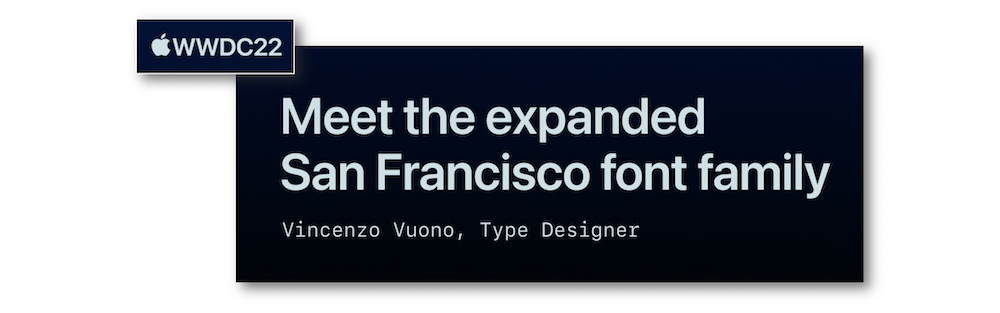
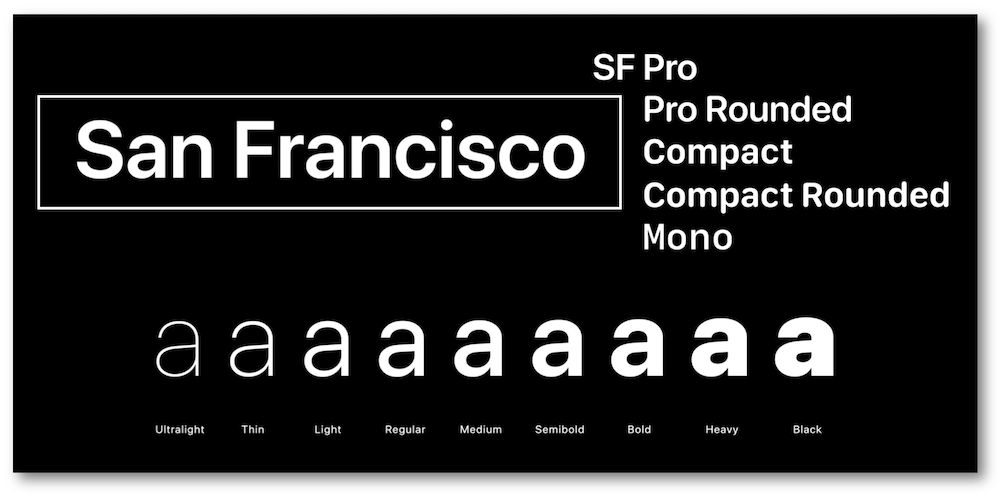
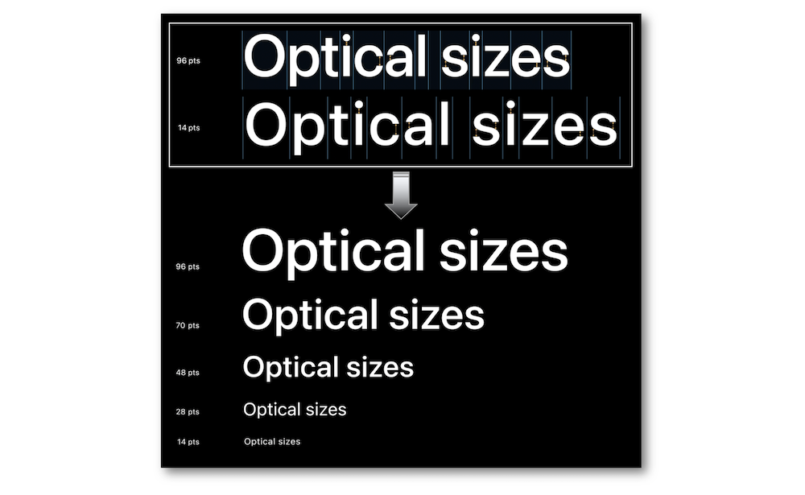
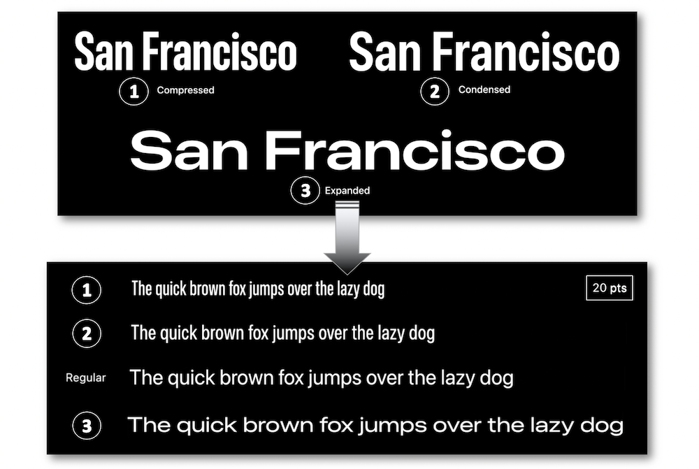
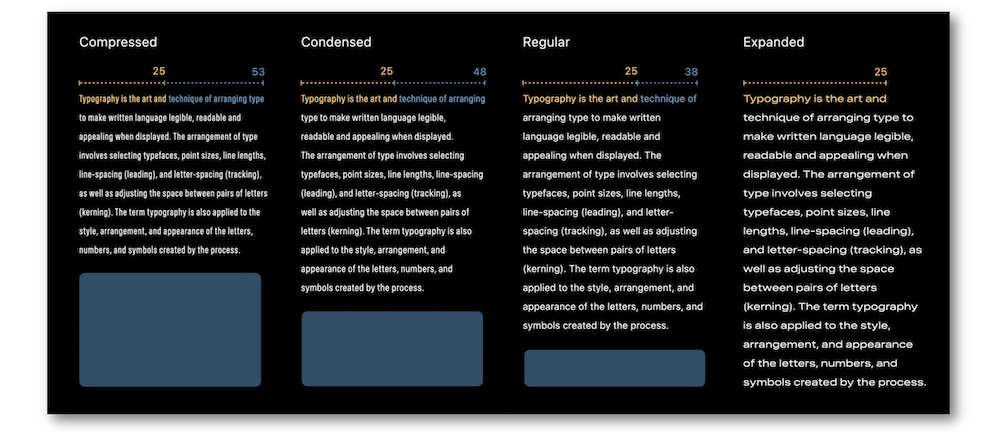
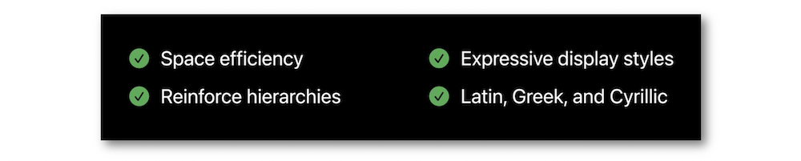
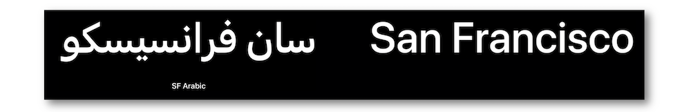
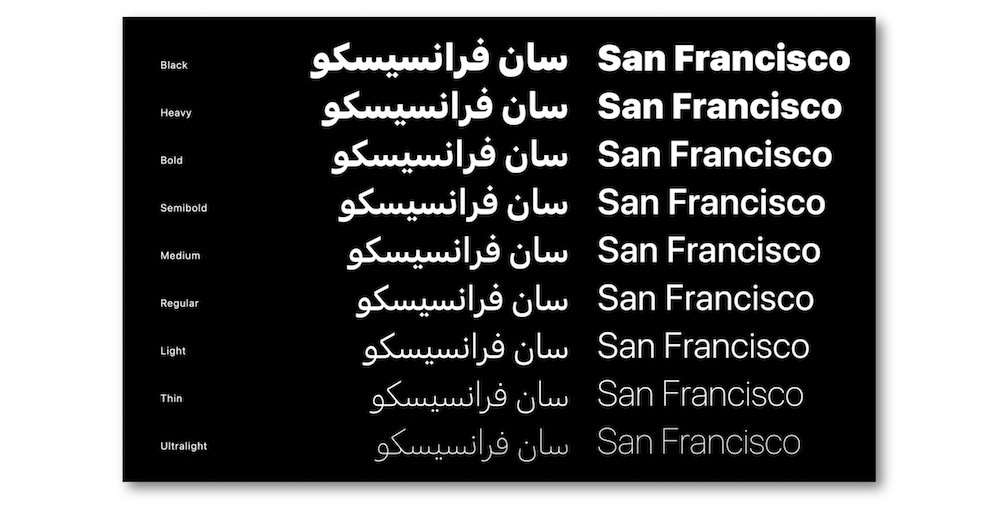
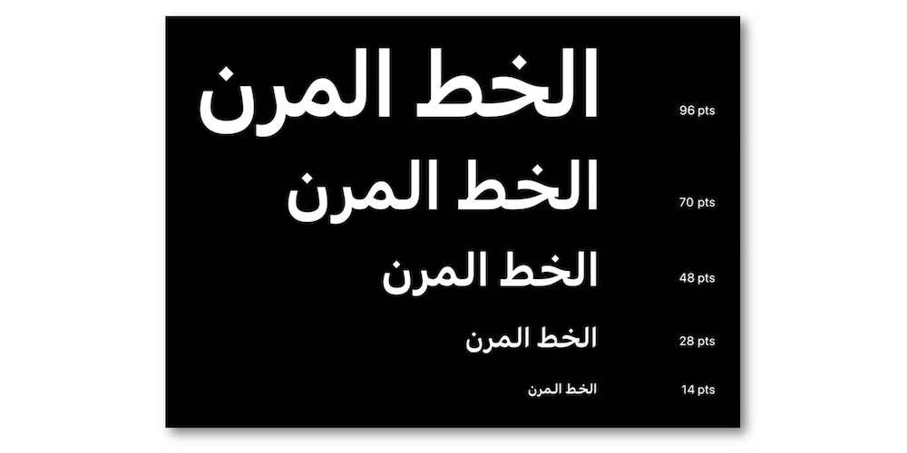
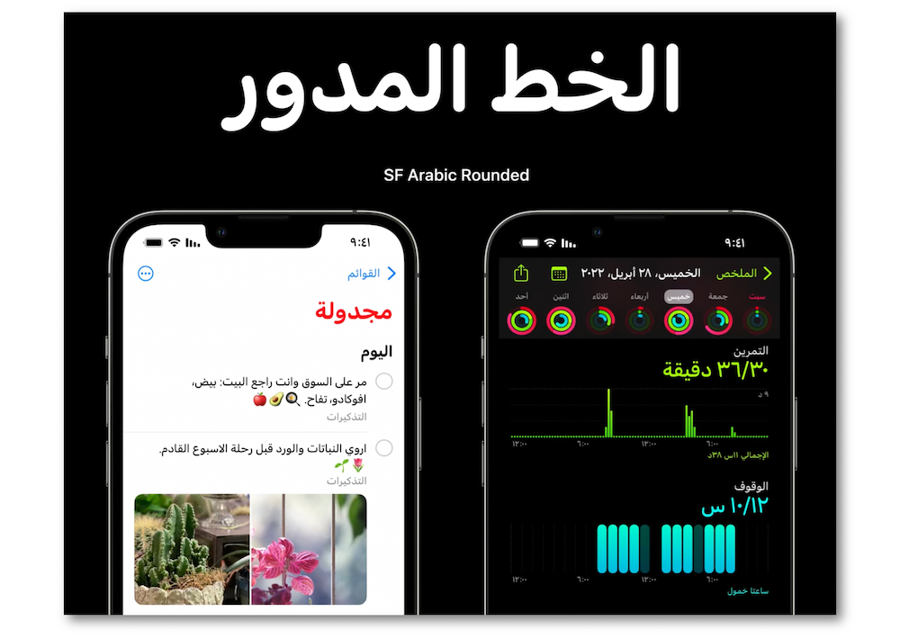

WWDC 2022: Meet the expanded San Francisco font family
Find hereafter a detailed summary of the above named video which belongs to a taxonomy of some WWDC footages.
The original video is available on the official Apple website (session 110381).

"Discover the latest additions to San Francisco – the system font for Apple platforms – and find out how they can provide more control and versatility when designing interfaces. In addition to weights and optical sizes, San Francisco now supports three new width styles: Condensed, Compressed, and Expanded. We'll also take you through the linguistic expansion of San Francisco and learn more about the feature-rich Arabic system font families: SF Arabic and SF Arabic Rounded."
Most of the illustrations are parts of the Apple presentations and may be available at the Resources section inside the Overview sheet of each video.
Overview #
The San Francisco families and styles have been improved over the years for providing a better user experience through the UI design.

Since 2016, variable fonts enable optical sizing for adjusting different typographic designs to fit various sizes and then improving the size modifications.

In iOS 16, three new width styles in SF Pro are available to offer a broad range of extra expressive styles: compressed, condensed and expanded.

Besides its efficient results regarding the headlines, the Width style is also compelling for handling space and legibility in a group of text lines.

Examples #
These new Width styles are exposed in some Apple apps to highlight their UI benefits.
Recap #

SF Arabic introduction #

Introduced in iOS 15, this system font benefits not only from the singular design of the San Francisco families but also from a dedicated Optical Sizes adjustement.

Readibility and legibility are also compelling whatever the font size.

The SF Arabic Rounded font has been added to the San Francisco families in iOS 16 to improve the user experience through the UI embellishment.
